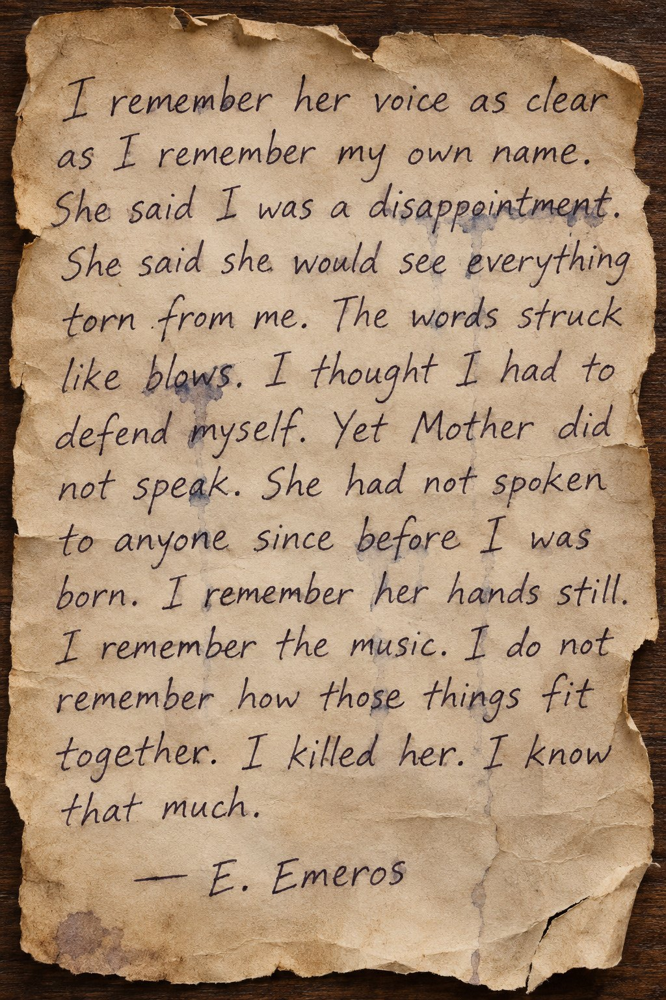

I remember her voice as clear as I remember my own name.
She said I was a disappointment. She said she would see everything torn from me. The words struck like blows. I thought I had to defend myself.
Yet Mother did not speak. She had not spoken to anyone since before I was born. I remember her hands still. I remember the music. I do not remember how those things fit together.
I killed her. I know that much. — E. Emeros